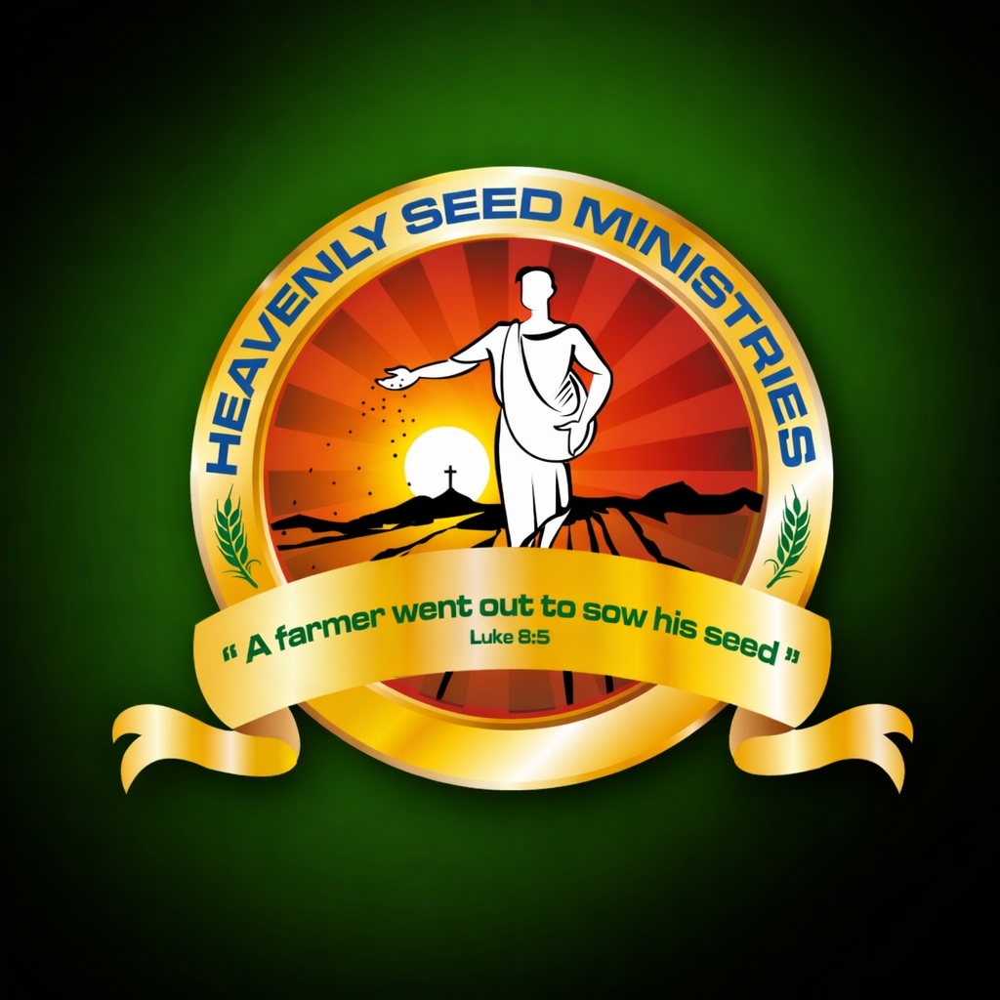

"A farmer went out to sow his seed" – Luke 8:5
Heavenly Seed Ministries is a faith-based organization dedicated to serving the community through compassion and love. Our mission is to support elderly people, provide education and shelter for children, care for widows, and assist families with medical needs.
Inspired by the words of Jesus in Luke 8:5, "A farmer went out to sow his seed," our ministry seeks to plant seeds of hope, faith, and transformation in the lives of those in need.
Providing love, shelter and support for elderly people in need.
Helping children with safe accommodation and education support.
Caring for widows through community support and compassion.
Helping families with hospital bills and health support.
"A farmer went out to sow his seed." – Luke 8:5
Serving the community through elderly care, children's education, widow support, and medical assistance.
Donate NowHelping elderly people, children education, widows support, and medical assistance through faith and compassion.
Helping elderly people, children education, widows support, and medical assistance through faith and compassion.
"A farmer went out to sow his seed" – Luke 8:5